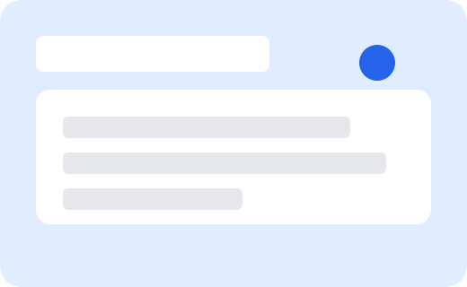

Accessible Form Builder
Create inclusive forms for everyone.
Build, preview, and share accessible forms with a dashboard inspired by Google Forms. Designed for PWD-friendly navigation and clear structure.

Quick actions
Accessibility checklist
- Keyboard focus indicators and skip link enabled.
- Form labels, fieldsets, and legends for screen readers.
- Color contrast verified for primary actions.
- Responsive layout for mobile and desktop.
AI assist (optional)
Suggest questions, auto-generate descriptions, and flag accessibility issues. Toggle in the editor (prototype placeholder).